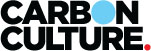
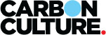

Introduction and Engagement
Gathering employee's ideas, concerns and good practices

Highlighting saving Opportunities
Arrows created discussions in kitchens and common spaces

Codesign Workshops across Organisation
A total of six ideas were developed

Storyboarding Ideas
Exploring how thermal comfort could be improved

Prototyping and Testing
Ideas were broken down into testable aspects

CoDevelopment
Sharing findings and testing ideas with early adopters

Running short Studies
Creating empathy between employees and building manager

Prototyping Apps
Testing a game to encourage employees to switch of their monitors

Designing Touchpoints
'Foodprints' cards to support the web app

Happy Community
Lots of feedback was taken on board

CarbonCulture Platform
Four web apps with focus on quick roll out across organisations


 
